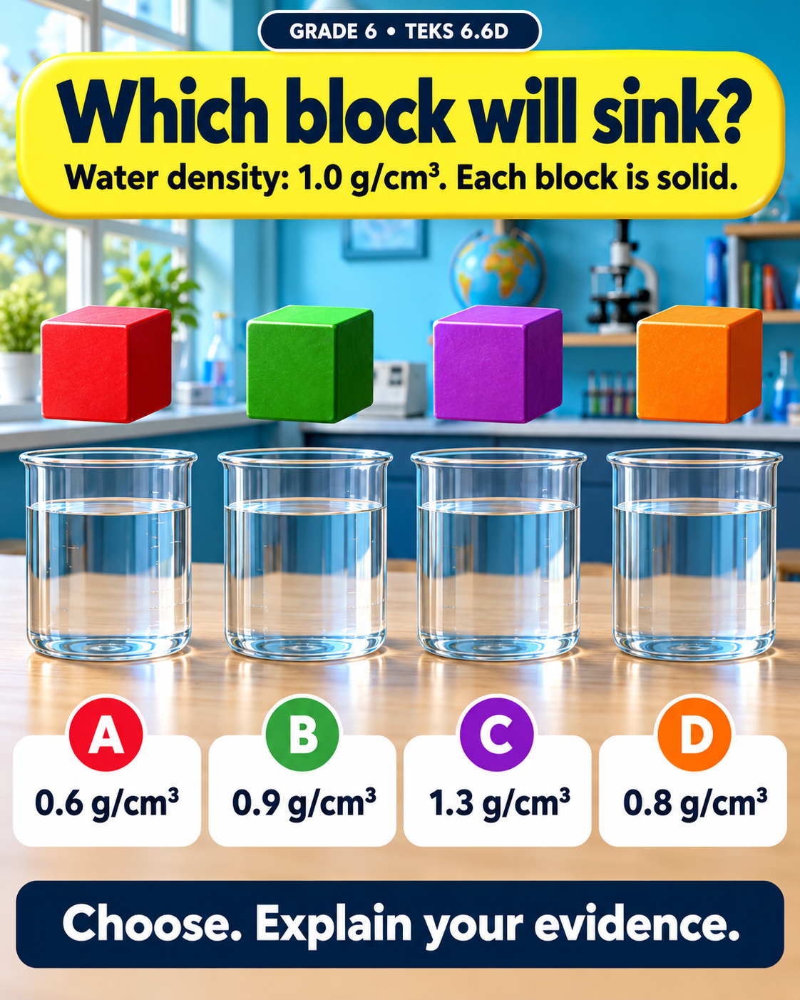
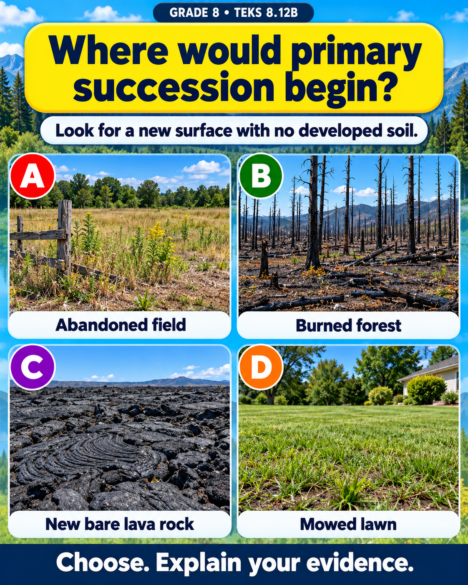

Grades 6–8
Visual Challenges
Choose an answer, explain your evidence, and discuss another possibility. Explore 15 illustrated challenges in matter, forces, energy, Earth systems, and living things.
Five challenges per grade, with selected Texas science TEKS and follow-up questions.
Open Visual Challenges
